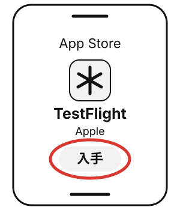
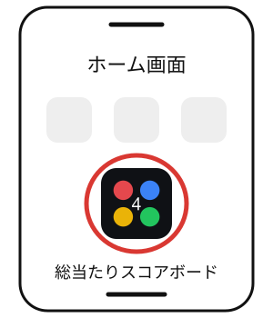

iPhoneに『総当たりスコアボード』を入れる方法
無料・3ステップ・約2分
Apple IDでサインイン済みのiPhoneならOK。アプリ用の会員登録・ログインは不要です。
1TestFlightを入れる
まず、App Storeで「TestFlight」を入れます。Apple公式の、テスト版アプリを受け取るためのアプリです。
TestFlightを入手入れ終わったら、このページに戻ってステップ2へ。

TestFlightを入れる 2参加リンクを開く
3ホーム画面から開く
ホーム画面にできた「総当たりスコアボード」のアイコンをタップ。ほかのアプリと同じように開けます。
TestFlight版は、アプリ名の横に小さなオレンジの点が付くことがあります。
まずは準備画面の「サンプルのチームで試す」でお試し。本番では見本の名前を消して、参加者の名前を入れ直してください。

次回からも、このアイコンへ
図は操作を説明するためのイラストです。iOSやTestFlightのバージョンによって、位置や表示が異なります。
うまくいかないとき
「このベータ版は、現在新規テスターを受け付けていません。」と出たら
Appleの確認待ちです。少し時間をおいて、ステップ2の参加リンクを開き直してください。
LINEから開いてうまくいかないとき
参加リンクをコピーして、Safariのアドレス欄に貼り付けて開き直してください。
Androidの人は、Web版をChromeで開いて「︙」→「ホーム画面に追加」。